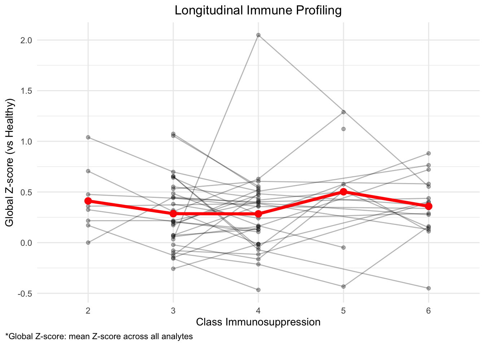

Immunsuppression_Luminex
I. Hanka
2026-10-23
Last updated: 2026-10-23
Checks: 6 1
Knit directory: Luminex_CarTrans/
This reproducible R Markdown analysis was created with workflowr (version 1.7.2). The Checks tab describes the reproducibility checks that were applied when the results were created. The Past versions tab lists the development history.
The R Markdown file has unstaged changes. To know which version of
the R Markdown file created these results, you’ll want to first commit
it to the Git repo. If you’re still working on the analysis, you can
ignore this warning. When you’re finished, you can run
wflow_publish to commit the R Markdown file and build the
HTML.
Great job! The global environment was empty. Objects defined in the global environment can affect the analysis in your R Markdown file in unknown ways. For reproduciblity it’s best to always run the code in an empty environment.
The command set.seed(20261015) was run prior to running
the code in the R Markdown file. Setting a seed ensures that any results
that rely on randomness, e.g. subsampling or permutations, are
reproducible.
Great job! Recording the operating system, R version, and package versions is critical for reproducibility.
Nice! There were no cached chunks for this analysis, so you can be confident that you successfully produced the results during this run.
Great job! Using relative paths to the files within your workflowr project makes it easier to run your code on other machines.
Great! You are using Git for version control. Tracking code development and connecting the code version to the results is critical for reproducibility.
The results in this page were generated with repository version 51d7901. See the Past versions tab to see a history of the changes made to the R Markdown and HTML files.
Note that you need to be careful to ensure that all relevant files for
the analysis have been committed to Git prior to generating the results
(you can use wflow_publish or
wflow_git_commit). workflowr only checks the R Markdown
file, but you know if there are other scripts or data files that it
depends on. Below is the status of the Git repository when the results
were generated:
Ignored files:
Ignored: .DS_Store
Ignored: .Rhistory
Ignored: .Rproj.user/
Ignored: Quality-Control_files/
Ignored: analysis/.DS_Store
Ignored: data/
Ignored: html/
Untracked files:
Untracked: Early_late_rejection.Rmd
Untracked: analysis/Early_late_rejection.Rmd
Unstaged changes:
Modified: analysis/Convalesence_Rejection.Rmd
Modified: analysis/Immunsuppression_Luminex.Rmd
Modified: analysis/Immunsuppression_Luminex_vsBaseline.Rmd
Modified: analysis/Luminex_HeatmapVisit.Rmd
Modified: analysis/Luminex_HeatmapVisit_vsBaseline.Rmd
Modified: analysis/Luminex_Overview.Rmd
Modified: analysis/PathologicalGrading_Luminex.Rmd
Modified: analysis/TransplantationRisk.Rmd
Modified: analysis/TransplantationRisk_vsBaseline.Rmd
Modified: analysis/index.Rmd
Note that any generated files, e.g. HTML, png, CSS, etc., are not included in this status report because it is ok for generated content to have uncommitted changes.
These are the previous versions of the repository in which changes were
made to the R Markdown
(analysis/Immunsuppression_Luminex.Rmd) and HTML
(docs/Immunsuppression_Luminex.html) files. If you’ve
configured a remote Git repository (see ?wflow_git_remote),
click on the hyperlinks in the table below to view the files as they
were in that past version.
| File | Version | Author | Date | Message |
|---|---|---|---|---|
| Rmd | 51d7901 | IsabellaH1993 | 2026-10-22 | 22.10.2026_21:48 |
| html | 51d7901 | IsabellaH1993 | 2026-10-22 | 22.10.2026_21:48 |
| Rmd | 0b0f489 | IsabellaH1993 | 2026-10-20 | 20.10.2026_12:15 |
| html | 0b0f489 | IsabellaH1993 | 2026-10-20 | 20.10.2026_12:15 |
| Rmd | 4e98555 | IsabellaH1993 | 2026-10-16 | 16.10.2026_11:40 |
| html | 4e98555 | IsabellaH1993 | 2026-10-16 | 16.10.2026_11:40 |
| html | c51e568 | IsabellaH1993 | 2026-10-15 | Build site. |
| Rmd | e483de7 | IsabellaH1993 | 2026-10-15 | Update Pages 15.10.2026 |
rm(list = ls())suppressPackageStartupMessages({
# Data handling
library(tidyverse)
library(data.table)
library(magrittr)
library(janitor)
library(here)
library(scales)
library(table1)
library(tableone)
library(flextable)
library(gtsummary)
library(openxlsx)
library(writexl)
library(readxl)
library(rstatix)
# Visualization
library(ggplot2)
library(ggpubr)
library(ggrepel)
library(ggbeeswarm)
library(ggcorrplot)
library(corrplot)
library(pheatmap)
library(ComplexHeatmap)
library(circlize)
library(RColorBrewer)
library(EnhancedVolcano)
library(plotly)
library(patchwork)
library(cowplot)
library(gridExtra)
library(grid)
library(ggpattern)
})basedir <- here ()Definition of the immunosuppressed host
table_lum_CarTrans_overall <- table_lum_CarTrans_overall %>%
select(-ISHLT_1990, -ISHLT_2004)# Rename visits in overall table
table_lum_CarTrans_overall <- table_lum_CarTrans_overall %>%
mutate(
Visit = as.character(Visit),
Visit = case_when(
Visit == "Healthy" ~ "Healthy",
Visit == "V0" ~ "Baseline",
Visit == "V1" ~ "Week 1",
Visit == "V2" ~ "Week 2",
Visit == "V3" ~ "Month 1-3",
TRUE~Visit
),
Visit = factor(Visit,levels = c("Healthy","Baseline","Week 1","Week 2","Month 1-3"))
)
# Assign unique sample IDs for each study ID
table_lum_CarTrans_overall <- table_lum_CarTrans_overall %>%
mutate(Sample_ID = paste(Study_ID, Visit, sep = "_"))list_ATG <- table_lum_CarTrans_overall %>%dplyr::select(Sample_ID, ATG_EMB1_3, Visit)
rownames(list_ATG) <- list_ATG$Sample_ID
list_ATG<- list_ATG[, c("ATG_EMB1_3", "Visit"), drop = FALSE] #,"Visit" add Visit into c() to get two factor grouping of overall visits groups and keep also all visits
# Remove metadata columns
table_lum_CarTrans_overall_01 <- table_lum_CarTrans_overall %>%
dplyr::select(-Study_ID, -Visit, -Sample_ID, -ATG_EMB1_3)
# Convert Data Table to Data Frame
table_lum_CarTrans_overall_01 <- as.data.frame(table_lum_CarTrans_overall_01)
# Transpose Data Table
table_lum_CarTrans_overall_01_t <- t(table_lum_CarTrans_overall_01)
## Column Annotations
colnames(table_lum_CarTrans_overall_01_t) <- table_lum_CarTrans_overall$Sample_ID
## Row Annotations
# Create list with Parameters
list_parameter_groups <- openxlsx::read.xlsx(file.path(basedir,"data", "Grouping of Luminex Marker.xlsx"))
# Create list with Columns of data table
list_parameter_datatable <- as.data.frame(rownames(table_lum_CarTrans_overall_01_t))
colnames(list_parameter_datatable) <- "Parameter"
# Merge to match the order of parameters
list_parameter_groups_01 <- merge(list_parameter_groups, list_parameter_datatable, by.y = "Parameter")
# Define the predefined order for Group
group_order <- c("Cytokine", "Chemokine", "Growth factor/Tissue Cytokine", "Activation Marker")
# Filter and order
list_parameter_groups_02 <- list_parameter_groups_01 %>%
# filter(Parameter %in% selected_markers) %>%
mutate(Grouping = factor(Grouping, levels = group_order)) %>%
# Parameter = factor(Parameter, levels = selected_markers)) %>%
arrange(Parameter)
# Extract ordered parameter vector
list_parameter_groups_03 <- as.character(list_parameter_groups_02$Parameter)
# Reorder Data Table based on the new ordered list
table_lum_CarTrans_overall_01_t_ordered <- as.data.frame(table_lum_CarTrans_overall_01_t)
table_lum_CarTrans_overall_01_t_ordered <- table_lum_CarTrans_overall_01_t[list_parameter_groups_03, ]
# Convert it back to matrix
table_lum_CarTrans_overall_01_t_ordered <- as.matrix(table_lum_CarTrans_overall_01_t_ordered)
#Convert back to numeric
table_lum_CarTrans_overall_01_t_ordered <- matrix(
as.numeric(trimws(table_lum_CarTrans_overall_01_t_ordered)),
nrow = nrow(table_lum_CarTrans_overall_01_t_ordered),
dimnames = dimnames(table_lum_CarTrans_overall_01_t_ordered))
# Log Transform
table_lum_CarTrans_overall_01_t_ordered <- log2(table_lum_CarTrans_overall_01_t_ordered)
# Scale
table_lum_CarTrans_overall_01_t_ordered <- t(apply(table_lum_CarTrans_overall_01_t_ordered, 1, scale))
# Create Cohort Label Colors of Annotations in heatmap
ann_colors <- list(
ATG_EMB1_3 = c(
"Baseline" = "#E0F7FA",
"Healthy" = "grey",
"No" = "lightgreen",
"Yes" = "#FF6666"),
Visit = c(
"Baseline" = "#E0F7FA",
"Week 1" = "#B2EBF2",
"Week 2" = "#A8C7FF",
"Month 1-3" = "#4DD0E1",
"Healthy" = "grey"),
Grouping = c(
"Cytokine" = "darkseagreen",
"Chemokine" = "lightblue",
"Growth factor/Tissue Cytokine" = "mediumpurple3",
"Activation Marker" = "lightpink"))
# Column Annotation
col_anno <- HeatmapAnnotation(df = list_ATG, col = ann_colors)
# Row Annotation
# Prepare row annotations as a data frame
row_anno <- rowAnnotation(Grouping = list_parameter_groups_02$Grouping,
col = list(Grouping = ann_colors$Grouping))
# Create Heatmap
heatmap_lum <- Heatmap(table_lum_CarTrans_overall_01_t_ordered,
name = "Expression",
col = circlize::colorRamp2(c(-5, 0, 5), c("blue", "white", "red")),
cluster_rows = TRUE,
cluster_columns = TRUE,
clustering_method_columns = "ward.D",
show_column_names = TRUE,
column_names_gp = gpar(fontsize = 8),
row_names_gp = gpar(fontsize = 10),
width = unit(18, "cm"), height = unit(15, "cm"),
top_annotation = col_anno,
right_annotation = row_anno)
# Draw Heatmap
show(heatmap_lum)
# Reorder grouped visits
#list_ATG$ATG_EMB1_3 <- factor(list_ATG$ATG_EMB1_3,levels = c("Healthy", "Baseline", "Yes", "No"))
# Create Heatmap split by visits
heatmap_lum_split <- Heatmap(table_lum_CarTrans_overall_01_t_ordered,
name = "Expression",
col = circlize::colorRamp2(c(-5, 0, 5), c("blue", "white", "red")),
cluster_rows = TRUE,
cluster_columns = FALSE,
clustering_method_columns = "ward.D",
show_column_names = TRUE,
column_names_gp = gpar(fontsize = 8),
row_names_gp = gpar(fontsize = 10),
width = unit(23, "cm"), height = unit(15, "cm"),
top_annotation = col_anno,
right_annotation = row_anno,
column_split = list_ATG$ATG_EMB1_3,
column_gap = unit(4, "mm")
)
# Draw Heatmap
show(heatmap_lum_split)
# Exclude Healthy and Baseline Condition from the comparison
table_ATG <- table_lum_CarTrans_overall %>%
dplyr::select(-Visit) %>%
dplyr::filter(!ATG_EMB1_3 %in% c("Healthy", "Baseline"))
# Calculate p-values between ATG groups
# Create the loop.vector (all the parameter columns)
names(which(sapply(table_ATG, is.numeric) == TRUE)) -> parameters
# Create table for stats
table_ATG_stat <- data.table (Parameter = numeric(), group1 = character(),
group2 = character(), n1 = numeric(),
n2 = numeric(), statistic = numeric (),
p = numeric (), p.signif = character(), FDR = numeric()) #FDR False Discovery Rate
# Create loop for calculation of stat test by parameter between ATG Yes vs No
for (i in parameters)
{
# Formula to insert parameter in loop
formula = as.formula( paste(i, "ATG_EMB1_3", sep="~") )
stat_parameter <- table_ATG %>%
wilcox_test(formula = formula) %>%
add_significance() %>%
mutate(FDR = p.adjust(p, method = "BH")) %>% #Benjamini-Hochberg correction
rename(Parameter = .y.)
# Combine currently calculated stats with previous calculations
table_ATG_stat <- rbind(table_ATG_stat, stat_parameter)
}
# Calculate FC between different Visits
# Calculate Mean of parameters per group
table_ATG_log2 <- table_ATG %>%
group_by(ATG_EMB1_3) %>%
summarise(across(CCL11:Grem2, ~ mean(.x, na.rm = TRUE)))
# Transverse Data Table and set rownames
table_ATG_log2_t <- table_ATG_log2 %>%
t %>%
as.data.frame() %>%
row_to_names(1)
# Convert whole data table to numeric
table_ATG_log2_t <- mutate_all(table_ATG_log2_t,
function(x) as.numeric(as.character(x)))
# Calculate FC between Healthy and Month 1-3
table_ATG_log2_t$log2_fc <- log2(table_ATG_log2_t$Yes /
table_ATG_log2_t$No)
# Add p-values to data table
# Extract only Parameters and p-values
stat.test_p <- table_ATG_stat %>%
dplyr::select(Parameter, FDR)
# Merge data tables (log2, FC, p val)
table_ATG_log2_t$Parameter <- rownames(table_ATG_log2_t)
table_ATG_volcano <- merge(table_ATG_log2_t, stat.test_p, by = "Parameter")
# Create Volcano Plot
# Mark parameters if FC < -1 = downregulated
table_ATG_volcano$diff_expression <- ifelse(table_ATG_volcano$log2_fc < -1.5, "down",
ifelse(table_ATG_volcano$log2_fc > 1.5, "up", "no"))
# Add new column to relabel parameters FC of <-1
table_ATG_volcano$label_para <- ifelse(table_ATG_volcano$log2_fc < -1.5 |
table_ATG_volcano$log2_fc > 1.5,
table_ATG_volcano$Parameter, "")
volcano_ATG <- EnhancedVolcano(table_ATG_volcano,
lab = table_ATG_volcano$label_para,
x = 'log2_fc', y = 'FDR',
FCcutoff = -1.5, pointSize = 3.5, labSize = 4, colAlpha = 0.7,
boxedLabels = TRUE, col = c("grey", "grey", "grey", "darkred"),
xlab = bquote(~Log[2]~ "fold change"), ylab = bquote("FDR-adjusted p-value (0.05)"),
xlim = c(-3, 3), ylim = c(0, 5), pCutoff = 0.05,
title = "Log2 fold change ATG Yes vs No", subtitle = NULL, border = 'full',
drawConnectors = TRUE,widthConnectors = 0.5, colConnectors = "darkred") +
theme_classic() +
theme(panel.grid = element_blank(),
panel.border = element_rect(colour = "black", fill = NA,),
legend.position = "none")Warning: Using `size` aesthetic for lines was deprecated in ggplot2 3.4.0.
ℹ Please use `linewidth` instead.
ℹ The deprecated feature was likely used in the EnhancedVolcano package.
Please report the issue to the authors.
This warning is displayed once per session.
Call `lifecycle::last_lifecycle_warnings()` to see where this warning was
generated.Warning: The `size` argument of `element_rect()` is deprecated as of ggplot2 3.4.0.
ℹ Please use the `linewidth` argument instead.
ℹ The deprecated feature was likely used in the EnhancedVolcano package.
Please report the issue to the authors.
This warning is displayed once per session.
Call `lifecycle::last_lifecycle_warnings()` to see where this warning was
generated. print( volcano_ATG)
table_lum_CarTrans_overall <- table_lum_CarTrans_overall %>%
select(-ISHLT_1990, -ISHLT_2004)# Rename visits in overall table
table_lum_CarTrans_overall <- table_lum_CarTrans_overall %>%
mutate(
Visit = as.character(Visit),
Visit = case_when(
Visit == "Healthy" ~ "Healthy",
Visit == "V0" ~ "Baseline",
Visit == "V1" ~ "Week 1",
Visit == "V2" ~ "Week 2",
Visit == "V3" ~ "Month 1-3",
Visit == "V4" ~ "Month 4-6",
Visit == "V5" ~ "Month 12",
grepl("^VX", Visit) ~ "Rejection Context",
TRUE~Visit
),
Visit = factor(Visit,levels = c("Healthy","Baseline","Week 1","Week 2","Month 1-3","Month 4-6","Month 12", "Rejection Context"))
)
# Assign unique sample IDs for each study ID
table_lum_CarTrans_overall <- table_lum_CarTrans_overall %>%
mutate(Sample_ID = paste(Study_ID, Visit, sep = "_"))
# Rename Class_Sup
table_lum_CarTrans_overall <- table_lum_CarTrans_overall %>%
rename(`Class Immunosuppression` = Class_Sup)#Prep table
df_Sup <- table_lum_CarTrans_overall %>%
select(`Class Immunosuppression`, Visit) %>%
filter(!Visit %in% c("Healthy", "Baseline")) #Filter out Healthy and Baseline for plotting
#Set order
df_Sup$Visit <- factor(
df_Sup$Visit,
levels = c(
"Week 1",
"Week 2",
"Month 1-3",
"Month 4-6",
"Month 12",
"Rejection Context"
)
)
#Set colors for different gradings
grade_colors_Sup <- c(
"Baseline" = "#E0F7FA",
"Healthy" = "grey",
"1" = "#66bd63",
"2" = "#a6d96a",
"3" = "#ffffbf",
"4" = "#fdae61",
"5" = "#f46d43",
"6" = "#d73027"
)ggplot(df_Sup, aes(x = Visit, fill = `Class Immunosuppression`)) +
geom_bar(position = "dodge") +
scale_fill_manual(values = grade_colors_Sup) +
labs(
title = "Immunosuppression Across Timepoints",
x = "Timepoint",
y = "Count"
) +
theme_classic()
# Create summary table with counts
df_counts <- df_Sup %>%
count(Visit, `Class Immunosuppression`)
ggplot(df_counts, aes(x = Visit, y=n, fill = `Class Immunosuppression`)) +
geom_bar(stat = "identity", position = "fill") +
geom_text(
aes(label = n),
position = position_fill(vjust = 0.5),
size = 3
) +
scale_fill_manual(values = grade_colors_Sup) +
labs(
title = "Immunosuppression Across Timepoints",
x = "Timepoint",
y = "Proportion"
) +
theme_classic()
# define analyte columns
analyte_cols <- setdiff(colnames(table_lum_CarTrans_overall),
c("Study_ID", "Visit", "Sample_ID", "Class Immunosuppression"))
# Log transform input values
table_lum_CarTrans_overall_z <- table_lum_CarTrans_overall %>%
mutate(across(all_of(analyte_cols), ~ log2(pmax(., 1))))
# Statistical test for normality using Shapiro-Wilk test (p>0.05 no evidence against normality)
shapiro_results <- table_lum_CarTrans_overall_z %>%
summarise(across(all_of(analyte_cols),
~ list(shapiro.test(.)))) %>%
pivot_longer(everything(),
names_to = "analyte",
values_to = "test") %>%
mutate(
statistic = map_dbl(test, "statistic"),
p_value = map_dbl(test, "p.value")
) %>%
select(-test)
print(shapiro_results)# A tibble: 51 × 3
analyte statistic p_value
<chr> <dbl> <dbl>
1 CCL11 0.988 4.45e- 2
2 CCL19 0.991 1.27e- 1
3 CCL2 0.988 4.28e- 2
4 CCL20 0.905 3.21e-11
5 PD_L1 0.997 9.20e- 1
6 CCL3 0.875 3.21e-13
7 CCL4 0.988 3.65e- 2
8 CD40L 0.936 9.92e- 9
9 CXCL1 0.964 8.47e- 6
10 CXCL10 0.987 2.50e- 2
# ℹ 41 more rows# Visualize distribution
plot_qq_all <- function(data, cols) {
for (col in cols) {
x <- data[[col]]
qqnorm(x, main = col)
qqline(x, col = "red")
}
}
# Run it
plot_qq_all(table_lum_CarTrans_overall_z, analyte_cols)


# Calculate healthy mean and SD as reference
healthy_stats <- table_lum_CarTrans_overall_z %>%
filter(Visit == "Healthy") %>%
summarise(across(all_of(analyte_cols),
list(mean = ~mean(., na.rm = TRUE),
sd = ~sd(., na.rm = TRUE))))
# compute z-scores + summarize (sample value - mean reference / sd reference)
df_z <- table_lum_CarTrans_overall_z %>%
mutate(across(
all_of(analyte_cols),
~ {
m <- healthy_stats[[paste0(cur_column(), "_mean")]]
s <- healthy_stats[[paste0(cur_column(), "_sd")]]
if (is.na(s) || s == 0) {
NA_real_
} else {
(.x - m) / s
}
}
))%>%
filter(`Class Immunosuppression` != "Baseline")
#Summarize without healthy
df_summary <- df_z %>%
filter(Visit != "Healthy") %>%
group_by(`Class Immunosuppression`, Study_ID) %>%
summarise(across(all_of(analyte_cols), ~ mean(.x, na.rm = TRUE)),
.groups = "drop")
# Set global score per group
df_summary <- df_summary %>%mutate(global_z = rowMeans(across(all_of(analyte_cols)), na.rm = TRUE))# Test on sample level
df_sample <- df_z %>% mutate(global_z = rowMeans(across(all_of(analyte_cols)), na.rm = TRUE))
# Test samples vs Healthy using Wilcox (not normaly distributed data)
vs_healthy <- df_sample %>%
filter(Visit != "Healthy") %>%
group_by(`Class Immunosuppression`) %>%
summarise(
mean_z = mean(global_z, na.rm = TRUE),
p_value = wilcox.test(global_z, mu = 0)$p.value,
.groups = "drop"
) %>%
mutate(p_adj = p.adjust(p_value, method = "BH"))
print(vs_healthy)# A tibble: 5 × 4
`Class Immunosuppression` mean_z p_value p_adj
<chr> <dbl> <dbl> <dbl>
1 2 0.485 0.00391 0.00488
2 3 0.266 0.0000135 0.0000337
3 4 0.267 0.0000000711 0.000000356
4 5 0.579 0.0273 0.0273
5 6 0.336 0.000354 0.000590 # Kruskal Wallis for non normal distribution overall (any Class different from healthy)
kruskal.test(global_z ~ `Class Immunosuppression`, data = df_sample)
Kruskal-Wallis rank sum test
data: global_z by Class Immunosuppression
Kruskal-Wallis chi-squared = 18.19, df = 5, p-value = 0.002717# Pairwise comparison
pairwise.wilcox.test(df_sample$global_z,df_sample$`Class Immunosuppression`,p.adjust.method = "BH")
Pairwise comparisons using Wilcoxon rank sum test with continuity correction
data: df_sample$global_z and df_sample$`Class Immunosuppression`
2 3 4 5 6
3 0.1905 - - - -
4 0.2735 0.7736 - - -
5 0.5847 0.1767 0.1741 - -
6 0.5847 0.2950 0.4333 0.2735 -
Healthy 0.0089 0.0293 0.0156 0.0195 0.0089
P value adjustment method: BH ggplot(df_summary,
aes(x = `Class Immunosuppression`, y = global_z, group = Study_ID)) +
geom_line(alpha = 0.3) +
geom_point(alpha = 0.3) +
stat_summary(aes(group = 1), fun = mean, geom = "line", size = 1.5, color = "red") +
stat_summary(aes(group = 1), fun = mean, geom = "point", size = 3, color = "red") +
theme_minimal() +
theme(plot.title = element_text(hjust = 0.5), plot.caption = element_text(hjust = 0), plot.caption.position = "plot") +
labs(title = "Longitudinal Immune Profiling",
y = "Global Z-score (vs Healthy)",
caption = "*Global Z-score: mean Z-score across all analytes")
ggplot(df_sample,
aes(x = `Class Immunosuppression`, y = global_z)) +
geom_boxplot() +
geom_jitter(width = 0.2, alpha = 0.3) +
stat_compare_means(method = "kruskal.test", label.y = max(df_sample$global_z, na.rm = TRUE) + 1) + # global test
stat_compare_means(
method = "wilcox.test",
comparisons = combn(unique(df_sample$`Class Immunosuppression`), 2, simplify = FALSE),
label = "p.signif"
) +
theme_minimal() +
labs(
title = "Global Z-score across Immunosuppression Classes",
y = "Global Z-score (vs Healthy)"
)`stat_compare_means()` with `comparisons` displays *unadjusted* p-values (no correction for multiple comparisons).
ℹ For p-values adjusted for multiple comparisons, use `geom_pwc()`, or `stat_pvalue_manual()` together with `compare_means(..., p.adjust.method = )`.
This message is displayed once per session.
# Remove FGFbasic from analyte list (includes NAs)
analyte_cols <- analyte_cols[analyte_cols != "FGFbasic"]
# Order Suppression Groups
df_summary$`Class Immunosuppression` <- factor(df_summary$`Class Immunosuppression`, levels = c("1", "2", "3", "4", "5", "6"))
# Average z-score per Class_Sup
heatmap_data <- df_summary %>%
group_by(`Class Immunosuppression`) %>%
summarise(across(all_of(analyte_cols), mean, na.rm = TRUE)) %>%
as.data.frame()Warning: There was 1 warning in `summarise()`.
ℹ In argument: `across(all_of(analyte_cols), mean, na.rm = TRUE)`.
ℹ In group 1: `Class Immunosuppression = 2`.
Caused by warning:
! The `...` argument of `across()` is deprecated as of dplyr 1.1.0.
Supply arguments directly to `.fns` through an anonymous function instead.
# Previously
across(a:b, mean, na.rm = TRUE)
# Now
across(a:b, \(x) mean(x, na.rm = TRUE))# Put Class_Sup as column names
rownames(heatmap_data) <- heatmap_data$`Class Immunosuppression`
heatmap_data <- heatmap_data %>%
select(-`Class Immunosuppression`)
# Transpose:
# rows = analytes
# columns = Class_Sup
heatmap_mat <- t(as.matrix(heatmap_data))
# Plot
Heatmap(heatmap_mat,
name = "Z-score",
col = colorRamp2(c(-3, 0, 3),c("blue", "white", "red")),
cluster_rows = TRUE,
cluster_columns = FALSE,
row_names_side = "right",
column_names_side = "top",
clustering_method_columns = "ward.D",
show_column_names = TRUE,
show_row_names = TRUE
)
sessionInfo()R version 4.6.1 (2026-06-24)
Platform: aarch64-apple-darwin23
Running under: macOS Sequoia 15.1
Matrix products: default
BLAS: /Library/Frameworks/R.framework/Versions/4.6/Resources/lib/libRblas.0.dylib
LAPACK: /Library/Frameworks/R.framework/Versions/4.6/Resources/lib/libRlapack.dylib; LAPACK version 3.12.1
locale:
[1] en_US.UTF-8/en_US.UTF-8/en_US.UTF-8/C/en_US.UTF-8/en_US.UTF-8
time zone: Europe/Zurich
tzcode source: internal
attached base packages:
[1] grid stats graphics grDevices utils datasets methods
[8] base
other attached packages:
[1] ggpattern_1.3.1 gridExtra_2.3.1 cowplot_1.2.0
[4] patchwork_1.3.2 plotly_4.12.1 EnhancedVolcano_1.30.0
[7] RColorBrewer_1.1-3 circlize_0.4.18 ComplexHeatmap_2.28.0
[10] pheatmap_1.0.13 corrplot_0.95 ggcorrplot_0.3.0
[13] ggbeeswarm_0.7.3 ggrepel_0.9.8 ggpubr_1.0.0
[16] rstatix_1.1.0 readxl_1.5.0.1 writexl_2.0.1
[19] openxlsx_4.2.9 gtsummary_2.6.1 flextable_0.10.1
[22] tableone_0.13.2 table1_1.5.1 scales_1.4.0
[25] here_1.0.2 janitor_2.2.1 magrittr_2.0.5
[28] data.table_1.18.6.1 lubridate_1.9.5 forcats_1.0.1
[31] stringr_1.6.0 dplyr_1.2.1 purrr_1.2.2
[34] readr_2.2.0 tidyr_1.3.2 tibble_3.3.1
[37] ggplot2_4.0.3 tidyverse_2.0.0
loaded via a namespace (and not attached):
[1] shape_1.4.6.1 rstudioapi_0.19.0 jsonlite_2.0.0
[4] farver_2.1.2 rmarkdown_2.32 GlobalOptions_0.1.4
[7] fs_2.1.0 ragg_1.5.2 vctrs_0.7.3
[10] askpass_1.2.1 htmltools_0.5.9 survey_4.5
[13] broom_1.0.13 cellranger_1.1.0 Formula_1.2-6
[16] sass_0.4.10 bslib_0.12.0 htmlwidgets_1.6.4
[19] cachem_1.1.0 uuid_1.2-2 whisker_0.4.1
[22] lifecycle_1.0.5 iterators_1.0.14 pkgconfig_2.0.3
[25] Matrix_1.7-6 R6_2.6.1 fastmap_1.2.0
[28] clue_0.3-68 snakecase_0.11.1 digest_0.6.39
[31] colorspace_2.1-4 S4Vectors_0.50.3 rprojroot_2.1.1
[34] textshaping_1.0.5 labeling_0.4.3 timechange_0.4.0
[37] httr_1.4.9 abind_1.4-8 compiler_4.6.1
[40] fontquiver_0.2.1 withr_3.0.3 doParallel_1.0.17
[43] S7_0.2.2 backports_1.5.1 carData_3.0-6
[46] DBI_1.3.0 ggsignif_0.6.4 openssl_2.4.2
[49] rjson_0.2.23 tools_4.6.1 vipor_0.4.7
[52] otel_0.2.0 beeswarm_0.4.0 zip_3.0.2
[55] httpuv_1.6.17 glue_1.8.1 promises_1.5.0
[58] cluster_2.1.8.3 generics_0.1.4 gtable_0.3.6
[61] tzdb_0.5.0 hms_1.1.4 utf8_1.2.6
[64] xml2_1.6.0 car_3.1-5 BiocGenerics_0.58.1
[67] foreach_1.5.2 pillar_1.11.1 later_1.4.8
[70] mitools_2.7 splines_4.6.1 lattice_0.23-1
[73] survival_3.8-12 tidyselect_1.2.1 fontLiberation_0.1.0
[76] knitr_1.52 git2r_0.36.2 fontBitstreamVera_0.1.1
[79] IRanges_2.46.0 stats4_4.6.1 xfun_0.61
[82] matrixStats_1.5.0 stringi_1.8.9 workflowr_1.7.2
[85] yaml_2.3.12 evaluate_1.0.5 codetools_0.2-20
[88] officer_0.7.6 gdtools_0.5.1 cli_3.6.6
[91] systemfonts_1.3.2 jquerylib_0.1.4 Rcpp_1.1.2
[94] png_0.1-9 parallel_4.6.1 viridisLite_0.4.3
[97] crayon_1.5.3 GetoptLong_1.1.1 rlang_1.3.0